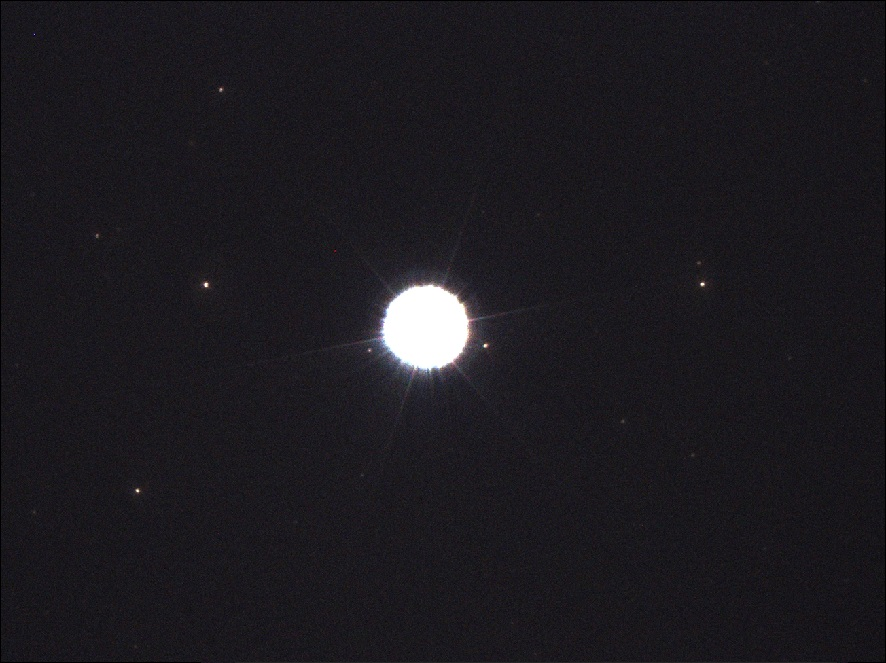
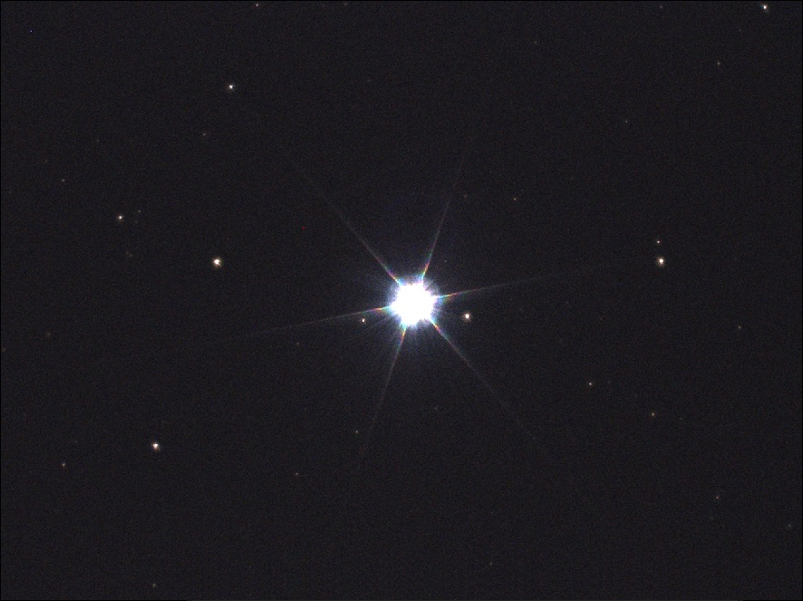
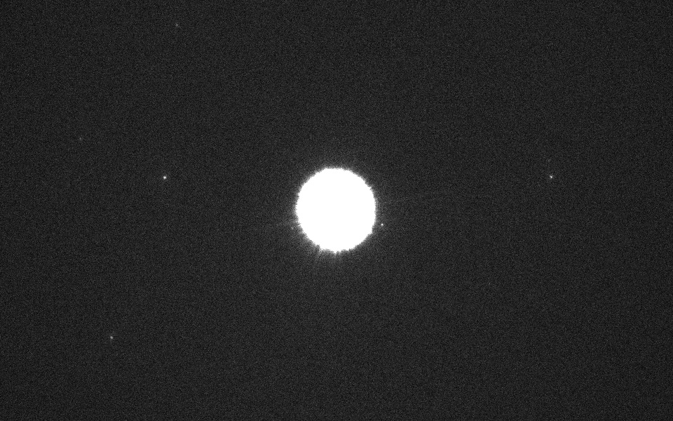
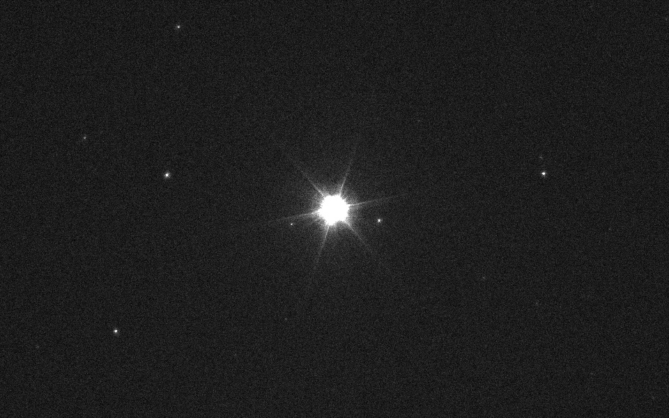

.
Video astronomy - Camera Assisted Astronomy
25-08-2021
|
Video Astronomia to gałąź astronomii polegająca na obserwacji na ekranie w czasie rzeczywistym obiektów astronomicznych przy użyciu światłosilnej optyki i czułej kamery. WSTĘP - Widziałeś wczorajszy mecz na żywo? - Widziałem !!! - Jak Ci się podobała pierwsza akcja z 90 sekundy ??? - Eee... ja go oglądałem na zdjęciach robionych co 60 sekund... - ?????? Jeszcze nie zaczęliśmy, a już mamy problem w kwestii fundamentalnej, mianowicie, istnieje nierozstrzygnięty spór o to, co jest Video Astronomią, a co nią nie jest. Kiedyś sytuacja była klarowna, aparat na kliszę robił zdjęcia, a kamery kręciły Video, wszystko było jasne. Później nastały czasy kamerek internetowych, ale i one, posiadając maksymalny czas klatki 1/25s i zapis AVI, nadal były uznawane za rejestratory Video i nie zaburzały jasnego podziału. Potem pojawiły się przeróbki owych kamerek na długie czasy i obecne kamerki dedykowane do astrofoto, z możliwością kręcenia AVI o dowolnej długości naświetlania każdej klatki filmu, oraz możliwością robienia niezależnych zdjęć z nieograniczonym czasem akwizycji i się porobiło... No i toczą się spory o to, co stanowi Video Astronomię, a co jej nie stanowi. Trwają niekończące się licytacje o długość pojedynczej klatki nagrania, która jeszcze stanowi rejestrację na żywo w czasie rzeczywistym, a która już takim nie jest. Jedni twierdzą, że klatka 1/10 sekundy (100ms) to maksymalna jej długość spełniająca kryteria, inni, że nawet 60 sekund. Szczerze mówiąc, nie potrafię zrozumieć, jak 60 sekund naświetlania każdej klatki nagrania video, można uznać nadal za rejestrację na żywo w czasie rzeczywistym (patrz anegdota ze wstępu). W moim odczuciu kolejnym wielkim nieporozumieniem jest stackowanie klatek w czasie rzeczywistym i wskazywanie stacków jako objaw obserwacji na żywo, bo przecież, tak naprawdę, w tym momencie, mamy już do czynienia z astrofotografią. Piszą Autorzy prac takowych: "oglądanie niemal na żywo", a potem prezentują zdjęcie 20x15s. To jakieś nieporozumienie jest. Podobnie wygląda kwestia nagrywania obserwacji celem późniejszego zestackowania i prezentowania takich stacków jako wizualizację osiąganych rezultatów. Ponownie mamy już do czynienia z czystą astrofotografią. Inaczej ma się sytuacja, gdy nagrane filmy z obserwacji, prezentujemy w formie Video, lub, z uwagi na ich objętość dyskową, w formie wyjętych z filmików najlepszych klatek, celem wizualizacji uzyskiwanych na ekranie obrazów, taki sposób podejścia do tematu nie budzi wątpliwości. Istnieją też wątpliwości co do kamerek noktowizyjnych, moim zdaniem nieuzasadnione, o ile pracują one w przyzwoicie krótkim czasie klatki. . Tak czy inaczej, Video-Astronomowie, w pogoni za zasięgiem, błyskawicznie stają się Astrofotografami, niestety, nie zdając sobie z tego sprawy, nadal uważają się za Video-Astronomów. Granica pomiędzy Video Astronomią a Astronomią Wspomaganą Elektronicznie (Electronically Assisted Astronomy - EAA) i Astrofotografią jest tak płynna, poszczególni hobbyści jednej nocy, i w swoich relacjach, przechodzą między nimi tak wiele razy, że ciężko dziś rozgraniczyć, kto się którą dziedziną zajmuje. Tak czy inaczej, moim zdaniem, artykuły i strony autorów pod szyldem Video Astronomi, z pracami stackami z wielosekundowych klatek, to jedno wielkie nieporozumienie. Sformułowałem kiedyś prosty test na sprawdzenie, czy mamy do czynienia z Video Astronomią, a idzie to tak... 1. Jeśli Twoje Video-obserwacje, na ekranie, w czasie rzeczywistym, pozwalają stwierdzić KTÓRY satelita przeleciał pierwszy, i w którą stronę, który leciał, to uprawiasz Video astronomię, jeśli nie, to przykro mi, ale parasz się EAA, lub Astrofotografią. 2. Czy do Twojej formy uprawiania Video Astronomii bezwzględnie niezbędny jest Ci napęd osi Ra? Prawdziwa Video Astronomia nie wymaga bezwzględnie napędu, może się bez niego obyć, w niej napędu Ra używa się jedynie ze względów praktycznych i estetycznych. Najwyżej obiekty będą uciekały, gwiazdy będą lekkimi kreskami, trudno, ale rygoru posiadania nie ma. Więc jeśli nie musisz być wyposażony w powyższe, to uprawiasz Video Astronomię, jeśli jednak nie możesz się bez niego obyć, to przykro mi, ale parasz się EAA, lub Astrofotografią. szu - szu - szu - mryg - szu - szu... zrozumie kto obejrzy :) Przepraszam, ale jak stać się świadkiem tego pociesznego zdarzenia na stacku 20x30sek? Niemniej, pozostawiając każdemu prawo do indywidualnej opinii w tym zakresie, zaprezentuję poniżej coś na pobudzenie wyobraźni :) - SPRZĘT - Sprzęt użyty do nagrań to: . - Teleskop Newton 320/1500 | f4,7 + reduktor ogniskowej GSO 0,5x = 320/800 | f2,5 + Barlow Hyperion 2,25x (1,9x) = 320/2850 | f9 - Kamera ZWO ASI 224MC - Modyfikowana Posiadam dobre czułe kamerki mono i kolor, i stwierdzam jednoznacznie, że jeśli uprawiać Video Astronomię, to mimo lepszych parametrów kamer mono, do tej zabawy, najlepiej brać kolor :) Nawet najlepsze monochromatyczne nagrania są jakieś takie bezduszne i nie mogą się równać z kolorowym obrazem na ekranie :) - PRZYKŁADY - Video Astronomia to nie Astrofotografia, tu nie będzie spektakularnych kolorowych widokówek, tutaj będzie ciemno, brzydko i ledwo widocznie, z tym się pogódźcie, bo ta dziedzina tak ma :) Mgławica planetarna Messier 27 | Konstelacja Lisa Newton 320/800 (f2,5) + ASI 224MC mod Mk II + IDAS LPS-D1 | 2 fps Mgławica planetarna Messier 57 | Konstelacja Lutni Newton 320/800 (f2,5) + ASI 224MC mod Mk II + IDAS LPS-D1 | 1 fps Mgławica planetarna NGC 7008 | Konstelacja Łabędzia Newton 320/1500 + ASI 224MC mod Mk II + Baader UHC-S | 1 fps Mgławica NGC 7635 | Konstelacja Kasjopei Newton 320/800 (f2,5) + ASI 224MC mod Mk II + Baader UHC-S | 1 fps Mgławica planetarna NGC 6826 | Konstelacja Łabędzia Newton 320/800 (f2,5) + ASI 224MC mod Mk II + Baader UHC-S | 1 fps Mgławica planetarna NGC 7662 | Konstelacja Andromedy Newton 320/800 (f2,5) + ASI 224MC mod Mk II + Baader UHC-S | 2 fps cdn. :) Na koniec, małe porównanie efektów uzyskiwanych z Reduktorami Ogniskowej GSO o rozmiarze 1,25" i 2". Sprzęt, obiekt, parametry identyczne, efekty bardzo różne. Kamera ASI224 kolor Teleskop Newton 320/1500 + reduktor ogniskowej GSO 0,5x 1,25" = 320/800 | f2,5  Teleskop Newton 320/1500 + reduktor ogniskowej GSO 0,5x 2" = 320/800 | f2,5  oraz Kamera ASI290 mono Teleskop Newton 320/1500 + reduktor ogniskowej GSO 0,5x 1,25" = 320/800 | f2,5  Teleskop Newton 320/1500 + reduktor ogniskowej GSO 0,5x 2" = 320/800 | f2,5  Jak widzicie, mimo zastosowania kamerek z małymi matrycami, Reduktor 1,25" ostro przycina aperturę, jasne gwiazdy puchną, a zasięg mocno spada. Warto więc zainwestować w wersję 2"
MOGĄ CIĘ ZAINTERESOWAĆ RÓWNIEŻ


|